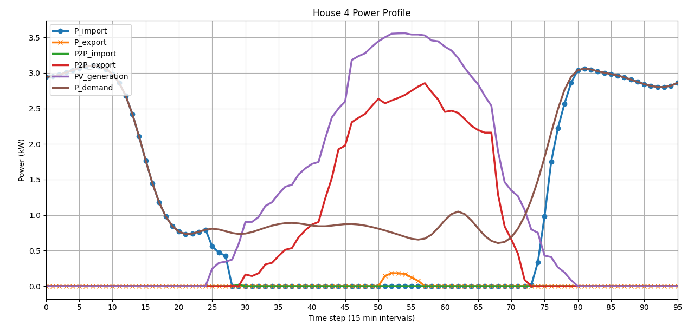
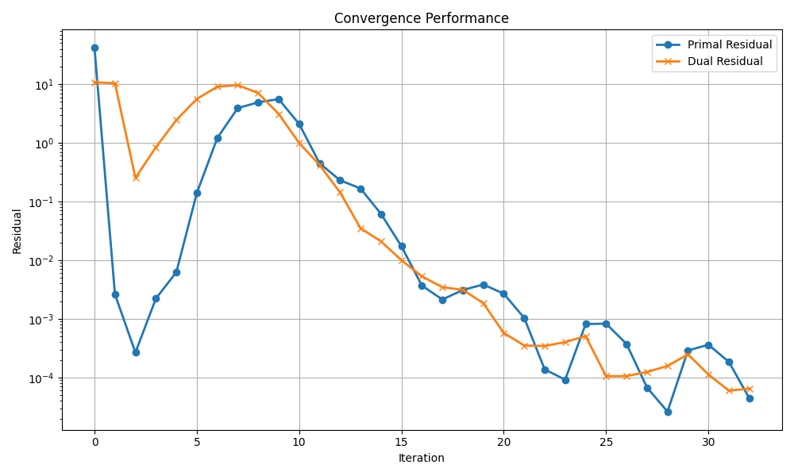

Research
The work is built in four stages. Each one keeps the model from the stage before and adds what a real distribution grid needs next.
-
A day-ahead market solved by the homes themselves
Published, IEEE PES ISGT-Asia 2025, Best Student Paper AwardFour homes with solar panels and batteries plan the next day's trades. I solved the same market three ways: with one central optimizer, with dual decomposition, and with ADMM, where each home solves its own problem and only shares its trade offers.
Plain ADMM needs a tuning value (the penalty, rho) chosen by hand, and a poor choice makes it slow or stops it converging. I developed an adaptive version that adjusts the penalty automatically as it runs, so homes reach agreement quickly without manual tuning.

One home over a day. Around midday its solar surplus (purple) is mostly sold to neighbours (red) instead of the grid. 
Adaptive ADMM converging: both errors fall steadily as the homes agree on their trades. -
Real-time trading with model predictive control
Submitted, IEEE PES General Meeting 2027Forecasts made a day ahead are never exact. In this stage the market is re-solved every five minutes over a rolling look-ahead window, and only the first step is carried out before the next update.
I compared five coordination models: market only, market with a network usage charge, a central optimizer, ADMM, and adaptive ADMM. The tests also scale the community from 4 homes up to 100.
-
Respecting the physical grid
Submitted, IEEE PES General Meeting 2027Trades share the same cables, so a market that ignores the network can overload lines or push voltages out of range. This stage adds a linearized power-flow model (LinDistFlow) with voltage and cable limits on standard 15-, 33- and 141-bus distribution feeders, and solves it in a distributed way.
To check that the simplified model is trustworthy, I compared its results against a full AC power-flow model of the same feeder.
-
Blockchain verification and settlement
In preparation, IEEE Transactions on Smart GridNeighbours need to trust each other's records. Smart contracts register each agreed trade, compare it with the meter reading, and transfer payment in an energy token, with a penalty when a seller delivers less than promised.
The settlement runs interval by interval alongside the real-time market, and was tested on the 15-, 33- and 141-bus feeders using a local Ethereum network.